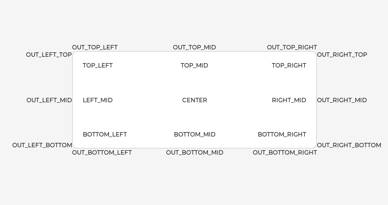

.. include:: /header.rst
:github_url: |github_link_base|/widgets/obj.md
Base object (lv_obj)
Overview
The 'Base Object' implements the basic properties of widgets on a screen, such as:
coordinates
parent object
children
contains the styles
attributes like Clickable, Scrollable, etc.
In object-oriented thinking, it is the base class from which all other objects in LVGL are inherited.
The functions and functionalities of the Base object can be used with other widgets too. For example lv_obj_set_width(slider, 100)
The Base object can be directly used as a simple widget: it's nothing more than a rectangle. In HTML terms, think of it as a <div>.
Coordinates
Only a small subset of coordinate settings is described here. To see all the features of LVGL (padding, coordinates in styles, layouts, etc) visit the Coordinates page.
Size
The object size can be modified on individual axes with lv_obj_set_width(obj, new_width) and lv_obj_set_height(obj, new_height), or both axes can be modified at the same time with lv_obj_set_size(obj, new_width, new_height).
Position
You can set the position relative to the parent with lv_obj_set_x(obj, new_x) and lv_obj_set_y(obj, new_y), or both axes at the same time with lv_obj_set_pos(obj, new_x, new_y).
Alignment
You can align the object on its parent with lv_obj_set_align(obj, LV_ALIGN_...). After this every x and y setting will be relative to the set alignment mode.
For example, this will shift the object by 10;20 px from the center of its parent:
lv_obj_set_align(obj, LV_ALIGN_CENTER);
lv_obj_set_pos(obj, 10, 20);
//Or in one function
lv_obj_align(obj, LV_ALIGN_CENTER, 10, 20);
To align one object to another use: lv_obj_align_to(obj_to_align, obj_referece, LV_ALIGN_..., x, y)
For example, to align a text below an image: lv_obj_align_to(text, image, LV_ALIGN_OUT_BOTTOM_MID, 0, 10).
The following align types exist: 
Parents and children
You can set a new parent for an object with lv_obj_set_parent(obj, new_parent). To get the current parent, use lv_obj_get_parent(obj).
To get a specific child of a parent use lv_obj_get_child(parent, idx). Some examples for idx:
0get the child created first1get the child created second-1get the child created last
The children can be iterated lke this:
uint32_t i;
for(i = 0; i < lv_obj_get_child_cnt(parent); i++) {
lv_obj_t * child = lv_obj_get_child(parent, i);
/*Do something with child*/
}
lv_obj_get_index(obj) returns the index of the object in its parent. It is equivalent to the number of younger children in the parent.
You can bring an object to the foreground or send it to the background with lv_obj_move_foreground(obj) and lv_obj_move_background(obj).
You can change the index of an object in its parent using lv_obj_move_to_index(obj, index).
You can swap the position of two objects with lv_obj_swap(obj1, obj2).
Display and Screens
At the highest level of the LVGL object hierarchy is the display which represents the driver for a display device (physical display or simulator). A display can have one or more screens associated with it. Each screen contains a hierarchy of objects for graphical widgets representing a layout that covers the entire display.
When you have created a screen like lv_obj_t * screen = lv_obj_create(NULL), you can make it active with lv_scr_load(screen). The lv_scr_act() function gives you a pointer to the active screen.
If you have multiple displays, it's important to know that the screen functions operate on the most recently created display or the one explicitly selected with lv_disp_set_default.
To get an object's screen use the lv_obj_get_screen(obj) function.
Events
To set an event callback for an object, use lv_obj_add_event_cb(obj, event_cb, LV_EVENT_..., user_data),
To manually send an event to an object, use lv_event_send(obj, LV_EVENT_..., param)
Read the Event overview to learn more about events.
Styles
Be sure to read the Style overview. Here only the most essential functions are described.
A new style can be added to an object with the lv_obj_add_style(obj, &new_style, selector) function.
selector is an ORed combination of part and state(s). E.g. LV_PART_SCROLLBAR | LV_STATE_PRESSED.
The base objects use LV_PART_MAIN style properties and LV_PART_SCROLLBAR with the typical backgroud style properties.
Flags
There are some attributes which can be enabled/disabled by lv_obj_add/clear_flag(obj, LV_OBJ_FLAG_...):
LV_OBJ_FLAG_HIDDENMake the object hidden. (Like it wasn't there at all)LV_OBJ_FLAG_CLICKABLEMake the object clickable by input devicesLV_OBJ_FLAG_CLICK_FOCUSABLEAdd focused state to the object when clickedLV_OBJ_FLAG_CHECKABLEToggle checked state when the object is clickedLV_OBJ_FLAG_SCROLLABLEMake the object scrollableLV_OBJ_FLAG_SCROLL_ELASTICAllow scrolling inside but with slower speedLV_OBJ_FLAG_SCROLL_MOMENTUMMake the object scroll further when "thrown"LV_OBJ_FLAG_SCROLL_ONEAllow scrolling only one snappable childrenLV_OBJ_FLAG_SCROLL_CHAIN_HORAllow propagating the horizontal scroll to a parentLV_OBJ_FLAG_SCROLL_CHAIN_VERAllow propagating the vertical scroll to a parentLV_OBJ_FLAG_SCROLL_CHAINSimple packaging for (LV_OBJ_FLAG_SCROLL_CHAIN_HOR | LV_OBJ_FLAG_SCROLL_CHAIN_VER)LV_OBJ_FLAG_SCROLL_ON_FOCUSAutomatically scroll object to make it visible when focusedLV_OBJ_FLAG_SCROLL_WITH_ARROWAllow scrolling the focused object with arrow keysLV_OBJ_FLAG_SNAPPABLEIf scroll snap is enabled on the parent it can snap to this objectLV_OBJ_FLAG_PRESS_LOCKKeep the object pressed even if the press slid from the objectLV_OBJ_FLAG_EVENT_BUBBLEPropagate the events to the parent tooLV_OBJ_FLAG_GESTURE_BUBBLEPropagate the gestures to the parentLV_OBJ_FLAG_ADV_HITTESTAllow performing more accurate hit (click) test. E.g. accounting for rounded cornersLV_OBJ_FLAG_IGNORE_LAYOUTMake the object positionable by the layoutsLV_OBJ_FLAG_FLOATINGDo not scroll the object when the parent scrolls and ignore layoutLV_OBJ_FLAG_OVERFLOW_VISIBLEDo not clip the children's content to the parent's boundaryLV_OBJ_FLAG_LAYOUT_1Custom flag, free to use by layoutsLV_OBJ_FLAG_LAYOUT_2Custom flag, free to use by layoutsLV_OBJ_FLAG_WIDGET_1Custom flag, free to use by widgetLV_OBJ_FLAG_WIDGET_2Custom flag, free to use by widgetLV_OBJ_FLAG_USER_1Custom flag, free to use by userLV_OBJ_FLAG_USER_2Custom flag, free to use by userLV_OBJ_FLAG_USER_3Custom flag, free to use by userLV_OBJ_FLAG_USER_4Custom flag, free to use by user
Some examples:
/*Hide on object*/
lv_obj_add_flag(obj, LV_OBJ_FLAG_HIDDEN);
/*Make an object non-clickable*/
lv_obj_clear_flag(obj, LV_OBJ_FLAG_CLICKABLE);
Groups
Read the Input devices overview to learn more about Groups.
Objects are added to a group with lv_group_add_obj(group, obj), and you can use lv_obj_get_group(obj) to see which group an object belongs to.
lv_obj_is_focused(obj) returns if the object is currently focused on its group or not. If the object is not added to a group, false will be returned.
Extended click area
By default, the objects can be clicked only within their bounding area. However, this can be extended with lv_obj_set_ext_click_area(obj, size).
Events
LV_EVENT_VALUE_CHANGEDwhen theLV_OBJ_FLAG_CHECKABLEflag is enabled and the object clicked (on transition to/from the checked state)LV_EVENT_DRAW_PART_BEGINandLV_EVENT_DRAW_PART_ENDis sent for the following types:LV_OBJ_DRAW_PART_RECTANGLEThe main rectanglepart:LV_PART_MAINrect_dscdraw_area: the area of the rectangle
LV_OBJ_DRAW_PART_BORDER_POSTThe border if theborder_poststyle property istruepart:LV_PART_MAINrect_dscdraw_area: the area of the rectangle
LV_OBJ_DRAW_PART_SCROLLBARthe scrollbarspart:LV_PART_SCROLLBARrect_dscdraw_area: the area of the rectangle
Learn more about Events.
Keys
If LV_OBJ_FLAG_CHECKABLE is enabled, LV_KEY_RIGHT and LV_KEY_UP make the object checked, and LV_KEY_LEFT and LV_KEY_DOWN make it unchecked.
If LV_OBJ_FLAG_SCROLLABLE is enabled, but the object is not editable (as declared by the widget class), the arrow keys (LV_KEY_UP, LV_KEY_DOWN, LV_KEY_LEFT, LV_KEY_RIGHT) scroll the object. If the object can only scroll vertically, LV_KEY_LEFT and LV_KEY_RIGHT will scroll up/down instead, making it compatible with an encoder input device. See Input devices overview for more on encoder behaviors and the edit mode.
Learn more about Keys.
Example
.. include:: ../../examples/widgets/obj/index.rst
API
.. doxygenfile:: lv_obj.h
:project: lvgl